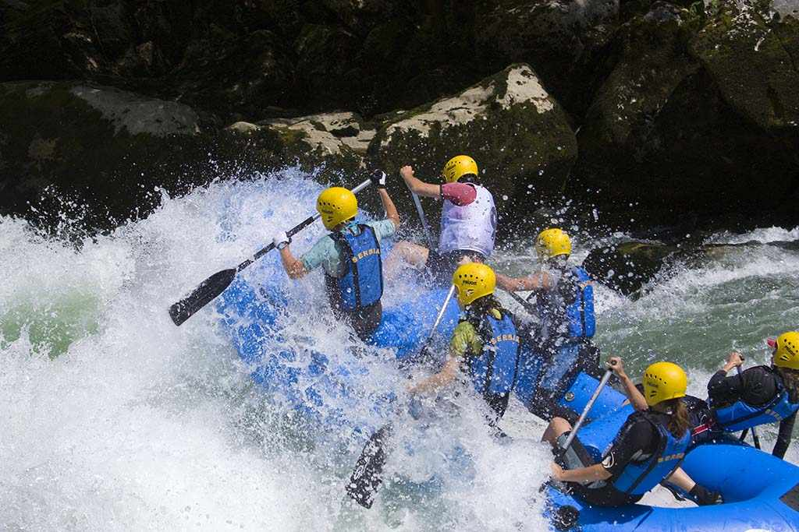
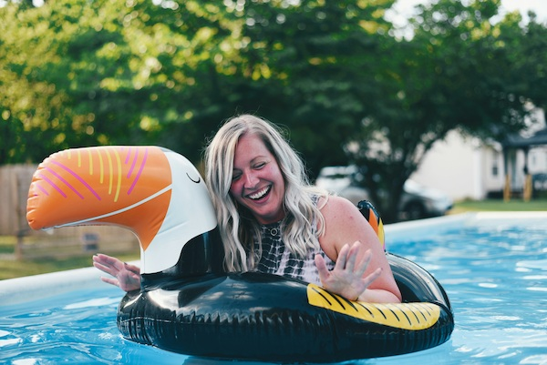

Splash white water rafting
History
Splash White Water Rafting was founded during the legendary Year of the Big Splash, when a group of enthusiastic paddlers set out to tame the mysterious Wobble Rapids armed only with oars, snacks, and unshakable optimism. Since then, we’ve grown from a riverside dream into a full blown splash empire, known far and wide for our commitment to adventure, safety, and occasional mid river dance breaks. Our journey is one of bubbles, bravery, and bold paddling.
Adventure awaits you